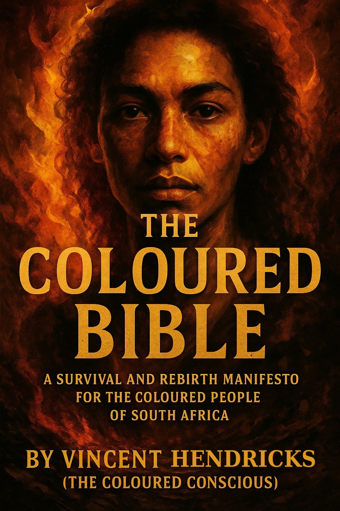

🔖
Vineys Reader
Enter the access key from your purchase to start reading.
Unlock my book
Don't have a key yet? Get your copy

Tap to open
Vineys Reader
THE COLOURED BIBLE
1 Page
2 Page
−
⟲
+
🔊 Read aloud
⚙ Voice
Load a book
❮
❯
1 / 1
Paginating…
Load a book
Title
Author (optional)
Paste the text, or
upload a .txt or .docx file
Cancel
Open book
Read-aloud voice
Voice
Pitch
1.00
Speed
0.95
Cancel
Save